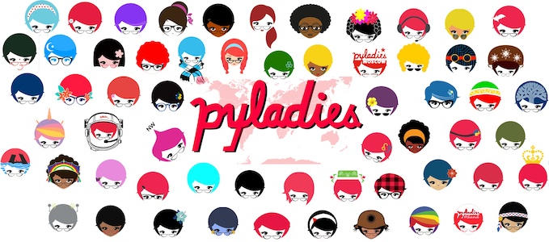
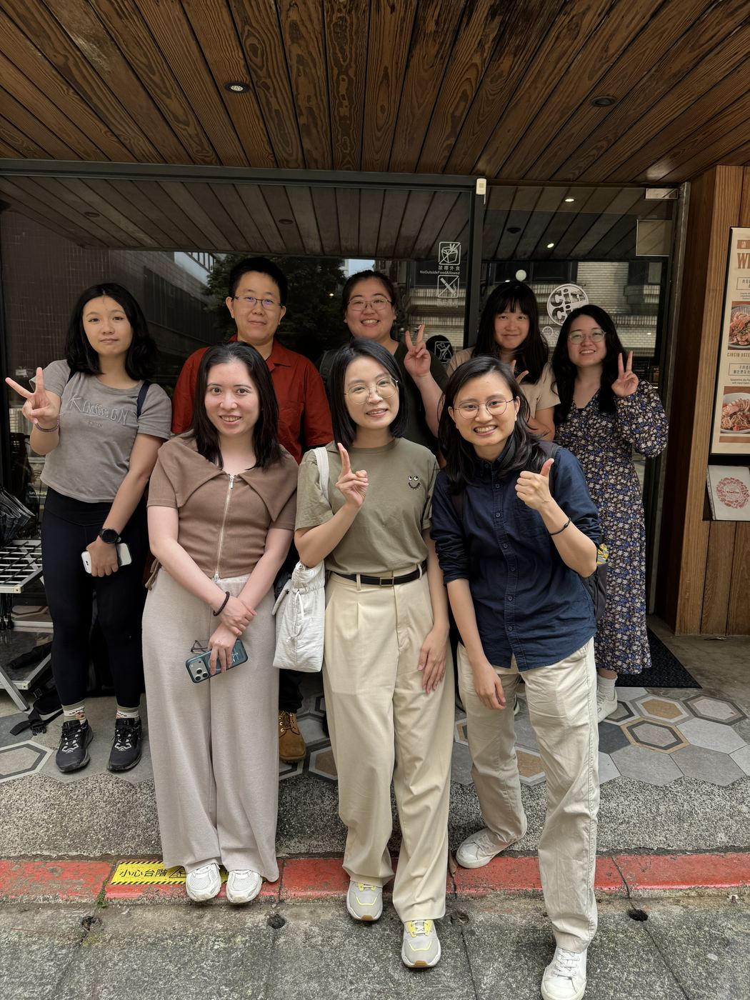
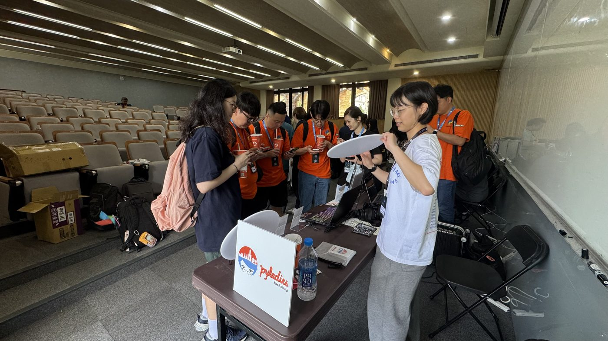

安心學習與交流的空間
我們希望打造一個讓女性能自在提問、安心表達的學習與交流環境。 在這裡，沒有比較與評價，只有彼此支持與共同成長。
很喜歡都是女孩一起學習的感覺，很放鬆也很充實。2026.05 Python 入門工作坊
講師助教很適切的注意大家的進度，跟上的感覺真好。2026.05 Python 入門工作坊
PyLadies Kaohsiung 是 PyLadies 國際組織的一員，以高雄為基地的女性技術社群，致力於打造讓女性能安心、自信地學習、交流與成長的環境。透過舉辦 Python 工作坊、技術與職涯經驗分享，幫助大家提升技術、拓展人脈與視野，成為科技領域中的貢獻者。
我們也積極與高雄在地技術社群交流合作，串聯社群資源、創造更多交流與學習的機會，為高雄的技術生態注入更多活力。

玩遊戲認識全球 PyLadiesWhat we value most


我們希望打造一個讓女性能自在提問、安心表達的學習與交流環境。 在這裡，沒有比較與評價，只有彼此支持與共同成長。
很喜歡都是女孩一起學習的感覺，很放鬆也很充實。2026.05 Python 入門工作坊
講師助教很適切的注意大家的進度，跟上的感覺真好。2026.05 Python 入門工作坊
PyLadies Kaohsiung 屬於每一位參與者。 每個意見都被重視，我們願意傾聽所有回饋，並與所有志工間討論、凝聚共識， 讓社群的方向能真正反映成員的聲音與價值。
我們怎麼做每場活動後回顧執行狀況、找出適合的改善方式；也定期舉辦志工聚會，一起討論社群事務。
作為非營利社群，我們希望能讓金流與資源使用的透明化。不僅如此，我們也重視參與者的溝通管道， 讓每位成員的意見都能被確實傳遞、被傾聽，並反映在社群運營中。
我們怎麼做透過回饋問卷與社群成員留言，持續改善社群活動方式與工具。開放帳本持續整理中，預計 2026 年底公開。


不論你是初學者或已有經驗的開發者， 在這裡都能透過學習 Python 提升技術、建立信心與增加人脈， 與夥伴一起探索更廣闊的可能性。
這場活動讓我從「害怕不適合」慢慢轉向「願意嘗試看看」。2026.02 職涯分享
講者提供關鍵字與 roadmap 可以依照興趣需求再自行研究。概念之間的串接與因果關係非常有條理。2026.08 Discord Bot 工作坊
透過分享，每位女性都有機會影響更多人。我們提供內容諮詢與試教回饋，幫助女性講者建立自信。此外也利用長期合作的工作坊教材，提供完整的培訓制度，讓志工更容易站上舞台，不需自行規劃教材，更能專注在分享與成長。
聽三位路線不一樣的講者分享各自的經驗，讓人有「一切都有可能」的精神振奮感。2026.09 職涯分享
這場分享會專業同時富有溫度，講者也不藏私的分享實務經驗與務實的學習方向，很是珍貴。2026.02 職涯分享
我們相信每個人都有成為領袖的潛力。 PyLadies Kaohsiung 正在建立更完善的制度，領導者也會主動分享經驗與舞台， 讓積極的志工都能獲得帶領與貢獻的機會。也會透過制度確保共治精神， 讓社群能持續維持開放與共同成長的文化。
我們怎麼做志工輪流參與活動每一階段，也一起到技術年會擺攤、和不同社群交流，為未來舉辦更大型的活動累積經驗。看貢獻社群的方式
社群大事記
行為準則
我們致力於打造一個對所有人友善、包容、無騷擾的社群空間。無論性別、性向、種族、身心狀況、職業、年齡、信仰或國籍，每位成員都應受到尊重，請以你希望被對待的方式對待他人。
社群成員應保持開放、體貼與尊重的態度。不論是初學者還是資深工作者，都值得被認真對待。我們不批評他人的程度，鼓勵提問與分享。
在 PyLadies，任何形式的騷擾都不被允許，一經發現將立即處置。
本社群為 PyLadies 社群的一部分，所有線上空間都須遵守 PyLadies 行為準則。
完整準則請參考：PyLadies Code of Conduct
Frequently Asked Questions
PyLadies 是一個國際的組織，各地都可以舉辦自己的 PyLadies 社群，同樣都是以推廣 Python 與支持女性在科技領域成為參與者與領導者為目標，但彼此之間獨立運作。各社群會依照在地的特性舉辦活動，也會不定期合作或互相支援。
視活動舉辦的地點而定，如果有場地費，會是需要自行負擔的。目前在 PyLadies Kaohsiung 主辦的活動，積極爭取下，感謝有不少單位願意無償提供場地，因此許多實體活動場次可以讓女性得以免費參加，也呼籲成功報名的學員珍惜這些機會。
因為目前在資訊科技領域的女性比例仍然算低，
許多對 Python 有興趣，或想在技術上更進一步的女性，在以男性為多數的環境中學習，常會感到壓力或不自在；就像男性走進幾乎全是女性的瑜伽等律動活動一樣，難免也會感覺緊張。
而 PyLadies Kaohsiung 的核心目標是想打造一個能讓女性安心自信地學習、討論溝通的環境，
讓更多喜歡 Python、想進入科技領域的女生，有機會成為主動的參與者與領導者。讓參與者(學員、志工、講師)有自在的空間一直是我們首要目標，也因此主辦的實體活動目前基本上僅開放女性參加。
我們真心希望，在不遠的將來，當資訊科技領域中的性別比例趨於一致、彼此都能互相尊重、人人都能自在參與時，這樣的性別限定活動將不再必要，屆時我們也會以更開放的方式歡迎所有喜愛 Python 的朋友，一起交流、一起成長～
➡︎ 講師：沒有任何限制，歡迎認同我們理念的朋友報名擔任講師。
➡︎ 志工：招募以女性為主要對象。視活動性質與需求，可能也會開放不限性別的夥伴一同協力，期待更多人共同推動友善的學習環境。
➡︎ 學員：實體活動如果是 PyLadies Kaohsiung 主辦的目前基本上僅限女性參加；若為與其他單位合辦或受邀參與的場次，則依該主辦單位的報名規則而定，是有機會可以參加的。線上活動則可以在參加任一場其他高雄社群的活動後，在加入社群自我介紹時提供高雄社群參與證明，通過審核後報名。
雖然 PyLadies Kaohsiung 專注在高雄，但目前也已經在台北舉辦過 Python 入門工作坊、職涯分享，以及金融數據工作坊的衛星場，有機會也會到全台各地舉辦活動喔～